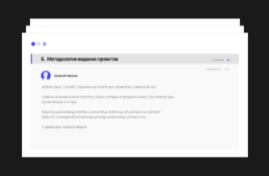

1
Дивіться відео-лекції у онлайн та оффлайн режимах
Якісне відео з зрозумілим поясненням теорії.
2
Робите завдання і відправляйте
на перевірку
Поспішати не треба, вибирайте зручний режим навчання.

3
Чи отримуєте розбір вашої роботи
Ваш куратор детально розповість про ваші помилки і про те, як їх виправити якнайшвидше.
4
Чи працюєте над помилками
Проходьте перевірку не раз, щоб переконатися, що в цей раз все правильно.
Перший рівень: чітка і зрозуміла теорія
За 4 місяці вам необхідно буде пройти 16 тем. Ви самостійно вивчіть базові
навички, з якими зможете створювати справжні проекти. Ви створите дипломний
проект - движок блогу в веб-інтерфейсі. Захист проекту проходить у відкритому
режимі на нашому майданчику або по відеозв'язку.
Другий рівень: інтенсивна практика
Під керівництвом наставника ви в складі команди створите власну соціальну
мережу. Фактично ця частина програми прирівнюється до стажування. Вам
видадуть ТЗ і дизайн проекту. Всі процеси, через які ви пройдете, це
максимально наближений до бойових умов досвід. Саме так створюється
комерційне програмне забезпечення в фірмах-роботодавців.